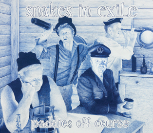

Acoustic, Harmonic & rather Celtic

Snakes in Exile released its 6th CD ‘Paddies off course’ in September 2012. This album contains 14 songs, solely original Snakes material! Some guest musicians contributed to this album, among them Philip Masure (guitar) and Dirk Naessens (fiddle/mandoline) from Urban Trad, and Toon Van Mierlo (Uilleann pipes, sax) from Naragionia.
TrackList
A Paddy Off Course
An Irishman sails to America in search of a better life. The ‘not so sober’ crew loses track and the boat hits land in Brazil. The title of the entire album is derived from this song. In plural, “paddies off course” could refer to Snakes in Exile themselves.
All Of This
Some might think that the worse you have it in this life, the better it will be in the after life. We suggest to be careful. I fit turns out not to be true, you missed a lot of fun for nothing. This is an ode to hedonism.
Poor Me A Drink
A drinking song about the dangers of drinking. A song about the traps for the occasional drinker for whom the occasions are piling up too much.
The Veil
Kristiaan wrote the lyrics for this song on the way back from a gig in switserland. Quite remarkable and even reckless since he was driving the van…
Toddler Blues
Sometimes, the blues that parents feel when babies turn into toddlers and they realize they have to start letting go of their child, leads to sentimental songs. In Toddler Blues, we didn’t want to go down that road. Just thinking back on how it was when we were young, and wanted not to be protected too much.
Make It In One Day
An ode to friendship.
Sally's Igor
Passion in an Eastern Europe scenery.
A Wavy Road
Hitting any road would be getting free. Sometimes it’s good to burn the bridges.
Oh Lord, I Am Bored
A gospel in which a Young kid is bored in Sunday mass. He envies his friends who’s parents don’t believe in god and let their kids play outside in the Sunday sun.
Make Your Smile
Our bass player Gert thinks that the prettiest part of a woman is her smile. The other snakes don’t necessarily agree with that. With a lovely sax solo by Toon Van Mierlo.
Head Over Heels
Besides ‘The veil’, this is another finger-picked ballad.
Mary Take Me Home
A love story in a Scottish pub.
Thank You For Coming
With this acapella, we say goodbye just before the ultimate tune.
No More Borders
This instrumental is a sort of a goodbye to ‘three tunes from the border” that for many years has been Peter’s whistling moment during gigs.